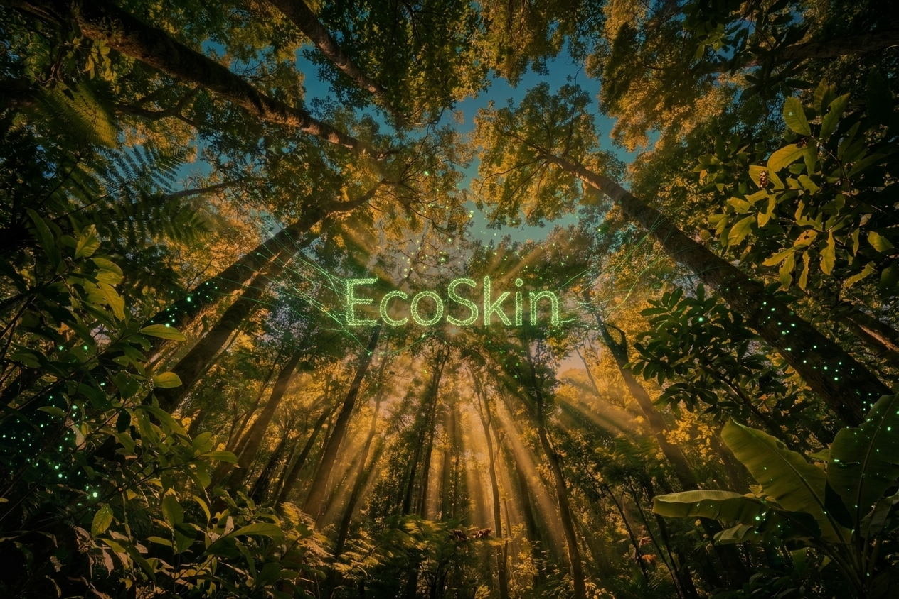
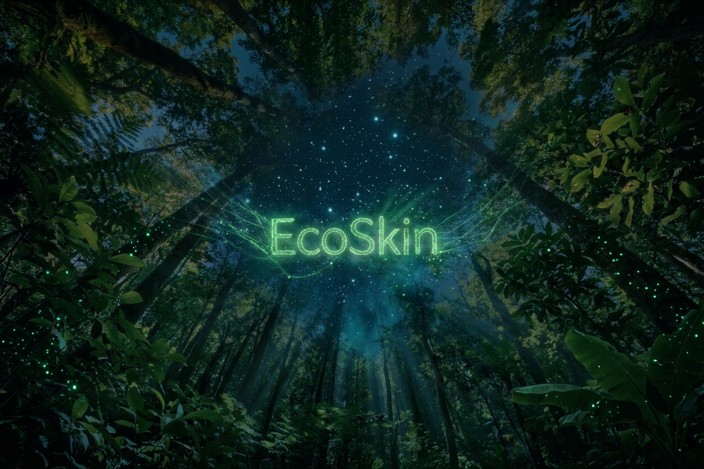
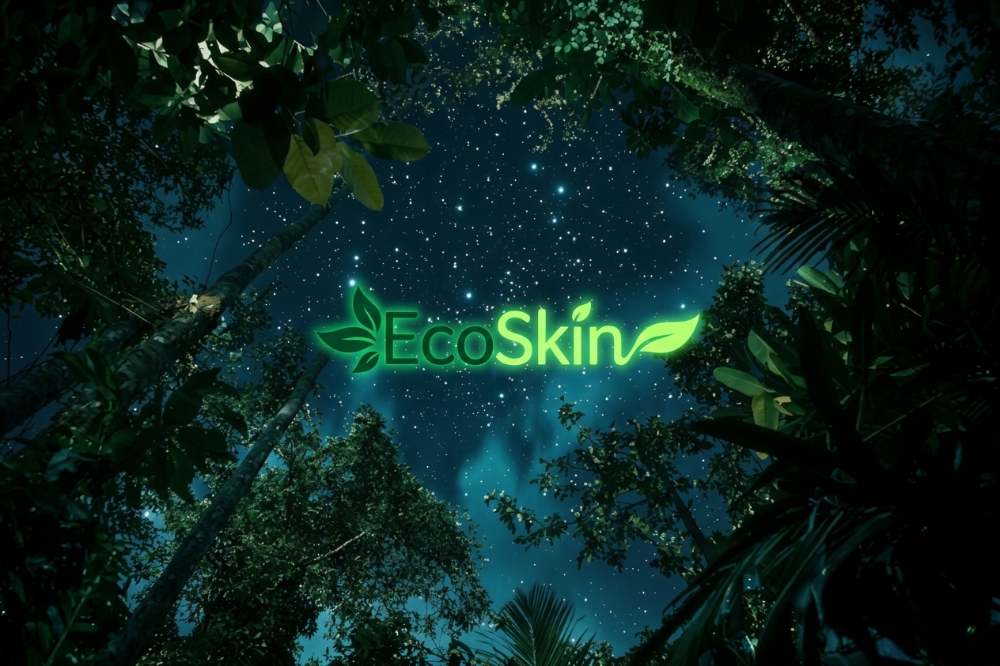

Beleza que transforma, impacto que preserva.
Formulados com biotecnologia verde e ativos puros.
Conheça nossa linha de skincare consciente.
ROLE PARA DESCOBRIR



Beleza que transforma, impacto que preserva.
Formulados com biotecnologia verde e ativos puros.
Conheça nossa linha de skincare consciente.